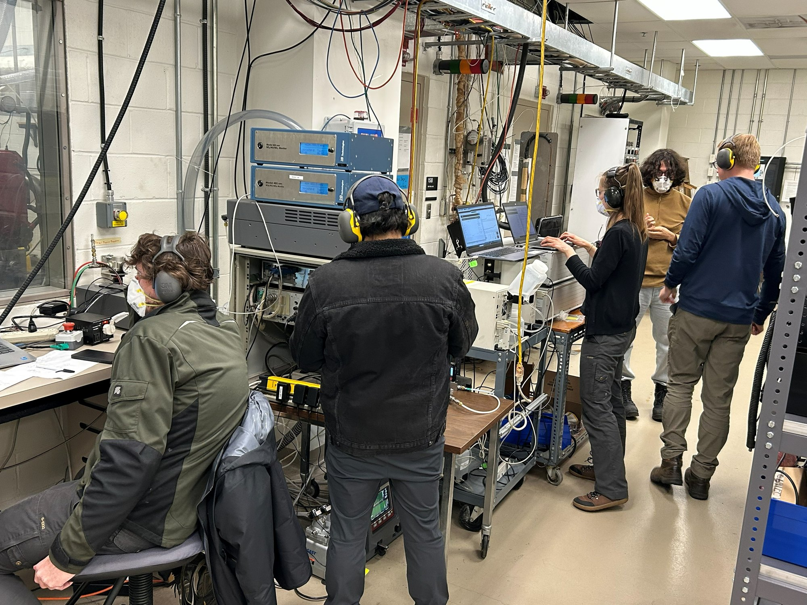
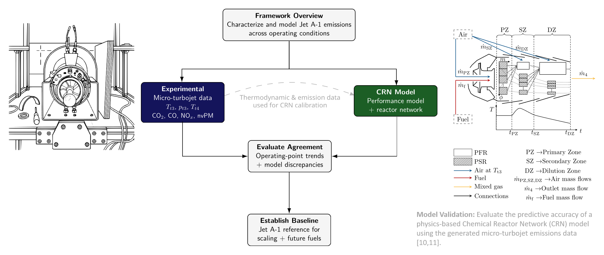
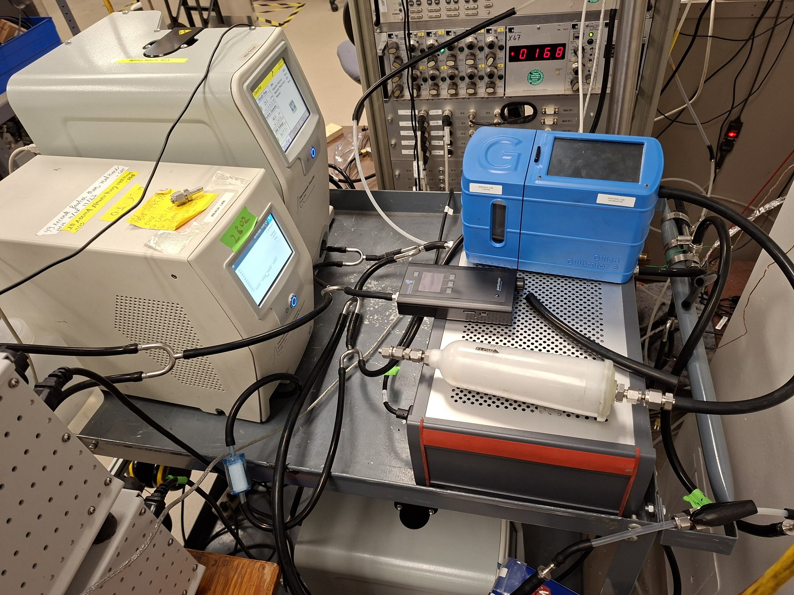
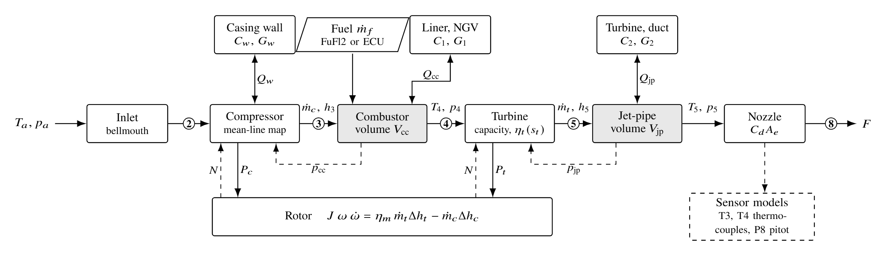
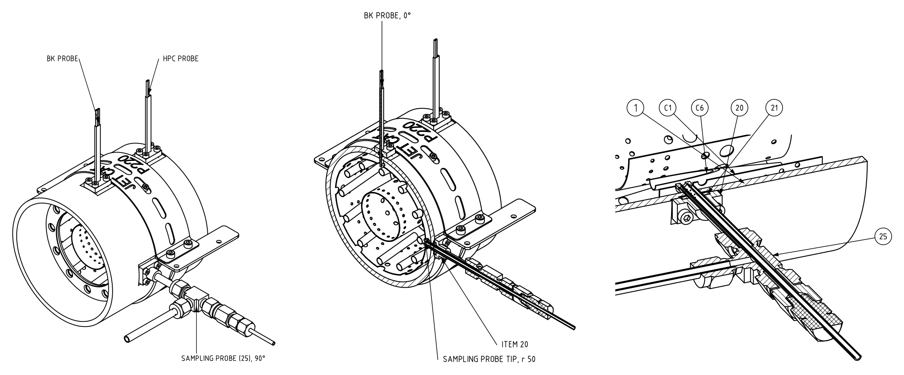
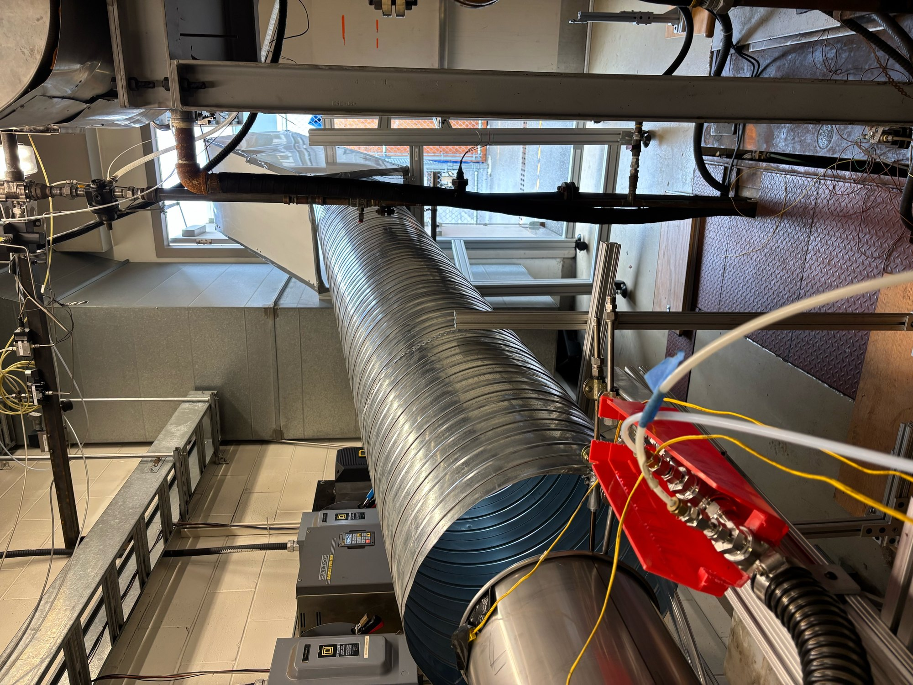

Micro-turbojet emissions program

JET-CALF / Boeing–NSERC Micro-Turbojet Research
JET-CALF (Jet Contrails from Aviation Lubricants and Fuels) is a multi-institution program on how fuels and lubricants affect aircraft emissions and contrails. I lead the micro-turbojet performance and gaseous-emissions task, and I coordinate the UBC experimental work for JET-CALF, SCALE-SAF and VLAME. Back-to-back tests on a JetCat P200-SX compare fuel use, gaseous emissions and particles for Jet A-1 and FT-SPK. Each result below belongs to one campaign and one engine, so it is a fuel comparison on this rig, not a full-scale result.
View project →
CRN Validation & Full-Scale Extrapolation
Daniel Lieder (TU Braunschweig) built a chemical reactor network (CRN) for the RQL combustor of the P200-SX. My measurements calibrate and test it. Against the Jet A-1 data of the ASME paper, it reproduces outlet temperature, EI CO₂ and EI CO within 4.5%. It overpredicts NOₓ by about 1.8×. In the GPPS fuel comparison, it predicts the measured fuel-induced changes in \(T_{t4}\), CO₂ and NOₓ within 1 percentage point. It does not predict the particle-number change.
View project →
Fuel-Dependent nvPM & Aerosol Characterization
Fuel effects on soot are a large part of the non-CO₂ question, and the micro-turbojet makes back-to-back particle tests affordable. I integrated an SMPS behind a catalytic stripper and built the size-dependent loss correction for the sampling line and stripper. At maximum thrust, the first distribution had a geometric mean diameter of 8.6 nm, similar in shape to a CFM56-7B at ground idle. In a later back-to-back test, FT-SPK cut the unit-density soot mass by 72%. The particle-number result is less certain, because it depends on the smallest, most strongly corrected bins.
View project →
A Physics-Based Transient Micro-Turbojet Model
I built a physics-based transient model of the P200-SX core with a P220 nozzle, in MATLAB and Simulink. It uses component physics, not scaled generic maps. Driven by the measured fuel flow, it predicts speed, thrust and several sensor readings. It also gives an estimate of the air mass flow, which the rig does not measure. That estimate is model-dependent and has no direct validation.
View project →
P200-SX Facility Commissioning & Baseline Testing
Commissioned the original instrumented JetCat P200-SX facility at CERC: engine telemetry, thermocouples, pressure transducers, a load cell, fuel metering, an ECOM J2KN Pro on the undiluted line and dedicated NOₓ, CO and CO₂ analysers on the diluted line. Verified ventilation and CO-alarm response, designed the first exhaust ducting and wrote the engine-test SOP.
View project →
P220-RXi Station 4 Sampling Apparatus
This apparatus adds a Station 4 sampling port to the P220-RXi casing, with a coaxial dilution probe that samples gas ahead of the turbine. The main purpose is to separate fuel-derived pollutants from lubrication-oil contributions, which exhaust measurements cannot isolate. I designed the probe with a coupled one-dimensional model, drew the probe and installation packages, and sent the designs out for fabrication of parts. No sample has been taken with the probe, so an oil-free sample is a design objective, not a demonstrated result.
View project →
P200-SX Exhaust Jet Model & Duct Design
This project takes a hot, fast jet out of a closed test cell, safely and without disturbing the engine. A MATLAB model of the free jet sized the ducting. A first concept failed because it set off the CO alarm. The installed duct carries the exhaust upward. The latest design work is a digital twin of the cell.
View project →VLAME / Aviation Emissions Modeling
Systems-level aviation emissions modeling with TU Braunschweig (IFAS): synthetic flight trajectories, a digital-engine performance model and emissions inventories, connecting engine exhaust to contrail-relevant analysis.
View project →